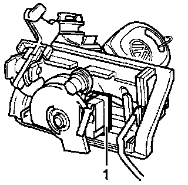
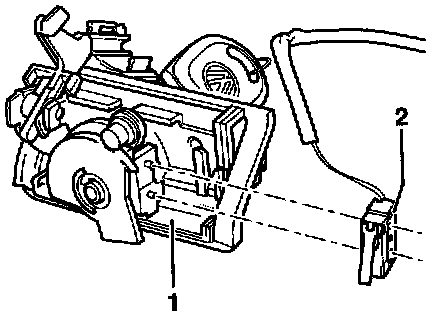

Trunk/Liftgate Sensor/Switch (For Alarm): Service and Repair
Trunk lock alarm/central locking switch -F124-NOTE: The following procedure describes removal and installation of the switch for the Golf. The procedure is similar for Jetta and Cabrio.
Removing:

- Remove rear lid trim.
- Disconnect 2-pin connector.
- Remove rear lid lock.
- Insert key into lock cylinder and turn lock cylinder clockwise to stop.
- Carefully pry contact switch -1- from locating pins.
NOTE: Part numbers are for reference only. Always check with a Volkswagen Parts Department for the latest parts information.
Installing:

- Press contact switch -2- onto locating pins.
- Install retaining plate around contact switch.
NOTE:
- Ensure contact switch wiring is correctly routed on rear lid lock.
- Before installing rear lid lock, check contact switch installation position by operating lock cylinder.
- Install rear lid lock.
- Connect 2-pin connector.
- Install rear lid trim.